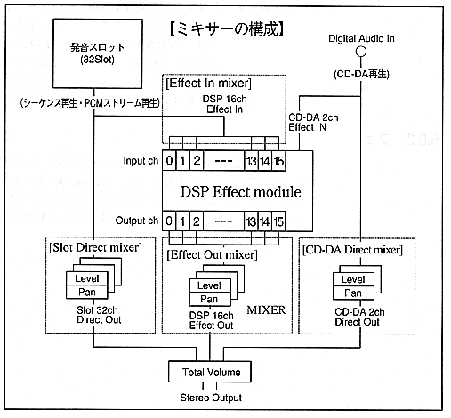

Return to previous page ｜ Return to menu ｜ Go to next page
6.7 DSP and mixer
It is very important to know the relation between DSP and mixer when controlling sound. This chapter explains the relationship between DSP and mixer.

Slot Direct Mixer: Direct output from sound generation slot (without DSP)
Level and PAN
CD-DA Direct Mixer: Direct output level from CD-DA (not through DSP)
And PAN
Effect In Mixer: DSP input level
Effect Out Mixer: Output level from DSP (through DSP)
PAN
Return to previous page ｜ Return to menu ｜ Go to next page